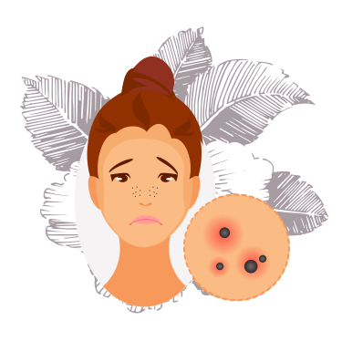

Afecciones Especificas
Creemos que el bienestar físico y mental siempre van de la mano. y cada piel es un mundo por lo cual cada una puedes encontrar información para cada tipo de afección y puedes encontrar principios activos que te van a ayudar a controlarlo prevenirlo o mejorarlo
Rosácea
- Es una enfermedad crónica del área facial, con remisiones y exacerbaciones.
- Afecta a ambos sexos, aunque es más frecuente en la mujer (4 a 1) entre los 30 y 50 años. Eventualmente puede afectar a niños y ancianos.
- En los hombres la afección es más grave
- La incidencia es enormemente superior en personas de fototipos I y II.
Acné
EAcné El acné es una enfermedad crónica inflamatoria de la piel que involucra las unidades pilosebáceas (folículo piloso y glándulas sebáceas), caracterizada por la formación de comedones, pápulas, pústulas y cicatrices, que aparecen principalmente en la cara y parte superior del tronco. Presencia de Propionibacterium acnés
